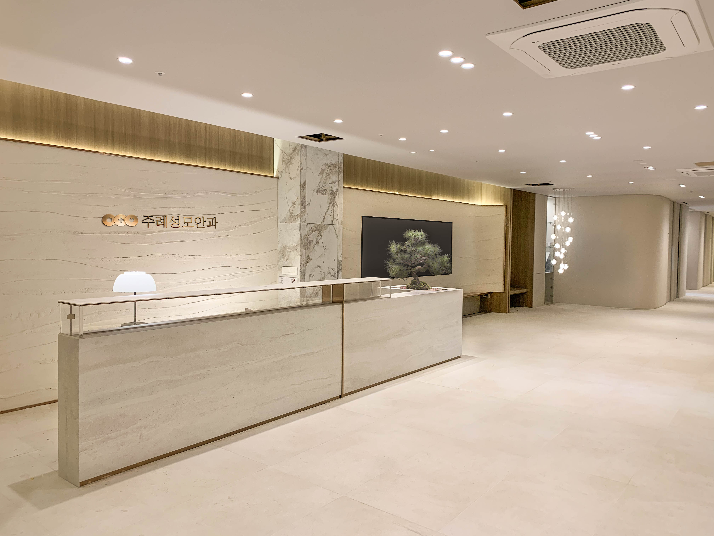

PRECISION & CARE
루메라 700
백내장 수술현미경
Since 2013. With you, always.
사상구 주례동에서, 당신의 눈 건강을 함께 살핍니다.
OUR DOCTORS
SPECIALIZED CARE
↔ 좌우로 움직여 화면을 비교해 보세요

눈의 굴절 상태와 생활 습관을 확인하고, 나에게 맞는 교정 방법을 상담합니다.
이해를 돕기 위한 시야 연출입니다. 실제 증상이나 치료 결과를 나타내지 않습니다.
JURYE ST. MARY’S EYE CLINIC
서로 다른 전문 분야, 세 명의 안과 전문의
ABOUT JURYE ST. MARY’S
처음 마주한 눈의 불편함부터 치료 후의 변화까지,
한 분 한 분의 이야기에 귀 기울입니다.
세 명의 안과 전문의가 각자의 경험과 세심한 진료로
내 눈에 맞는 치료와 꾸준한 눈 건강 관리를 함께 고민합니다.
가까이에서 오래도록, 주례성모안과가 함께하겠습니다.
주례성모의 진료 철학PRECISION & CARE
눈의 상태를 살피는 검사부터 수술까지,
진료에 필요한 장비를 갖추고 있습니다.
PRECISION & CARE
백내장 수술현미경

PRECISION & CARE
안저·시신경 검사

PRECISION & CARE
백내장 수술

PRECISION & CARE
수술 장비
OUR SPACE
VISIT US

엠스퀘어메디컬센터 9층 · 부산 사상구 가야대로 276
진료·내원 문의
051.325.1919주례성모안과 안내 도우미
개인정보·진료 기록은 입력하지 마세요. 전화 문의